1. Terminology
- Sirius element
-
Contents of the *.odesign model describing the Sirius application.
- diagram element
-
Sirius element describing something inside a diagram.
- property element
-
Sirius element describing something inside the properties view.
- semantic element
-
EObject of a model the end-user is working with.
- identifier
-
String entered in the "Id" field of a Sirius element, unique within the Sirius application.
- direct editor
-
Editor that is displayed inside the diagram if the end-user double-clicks a diagram element or presses F2 while the diagram figure is focused.
- widget
-
One entry field for a property element inside the properties view.
- newline
-
Platform-dependent invisible character(s) denoting the end of one line of text and the start of a new line of text.
- multi-line
-
Text entry field that shows (potentially) more than one line, and allows the add and remove newlines. Opposite of single-line.
- single-line
-
Text entry field that shows only one line, and does not allow to add a newline. Opposite of multi-line.
- injector
-
Google Guice injector completely configured for an Xtext language.
- feature
-
Instance of Ecore EStructuralFeature describing a part of a semantic element.
2. Overview
This asset contains extensions to the odesign editor providing Xtext-enabled text entry fields.
Xtext-enabled editors provide the usual Xtext features: syntax highlighting, auto completion, validation, etc.
The Xtext language does not need to be modified to be used in the editor (except for Advanced Capabilities).
The text entry fields can be placed
-
either inside a Sirius diagram (direct editors; directEdit)
-
or in the Sirius properties view (widgets; property).
The contents of the editors can be retrieved from two sources:
-
A semantic element of a model that’s used as input to the diagram (model). In this case, we may set additional options:
-
limit the set of editableFeatures,
-
ignore some nested features (ignoredNestedFeatures).
-
specify which features should be pre-selected when showing the Xtext editor (selectedFeatures).
-
specify which terminals should be included before and after the edited text (prefixTerminals / suffixTerminals).
-
-
A String feature of a semantic element (value). In this case, we may supply additional information if we wanted to edit an incomplete model:
-
text (hidden from the end-user) to be pre-pended (prefixText),
-
text (hidden from the end-user) to be appended (suffixText).
-
For model-based directEdit editors, if the model element is an edge, the affected label must be set (edgeLabelPosition).
An editor can display
-
either single-line contents (singleLine),
-
or multi-line contents (multiLine).
For all editors, we need to provide
-
An injector to access the Xtext language to use (injector).
All of this can be summarized in one table:
| property | directEdit | add. info [1] | ||
|---|---|---|---|---|
add. info [1] |
for all: injector |
|||
As advanced capabilities,
-
the editor might use a different grammar (a.k.a. Xtext language) for editing model contents than the one used for serialization;
-
we can force the serialization of whitespaces if our formatter does not work as expected;
-
the serializer can force ignored nested features to be transient;
-
we can constrain the editor’s global Scope to all Ecore resources from the Sirius session.
we provide two different Eclipse features:
-
com.altran.general.integration.xtextsirius.design.featurecontains all Eclipse plug-ins required to edit the Xtext-enabled entry fields in the odesign editor. It also contains the runtime feature below. -
com.altran.general.integration.xtextsirius.runtime.featurecontains all Eclipse plug-ins required at runtime to use the Xtext-enabled entry fields in a diagram (or associated property view).
3. Examples
3.1. .odesign Contents
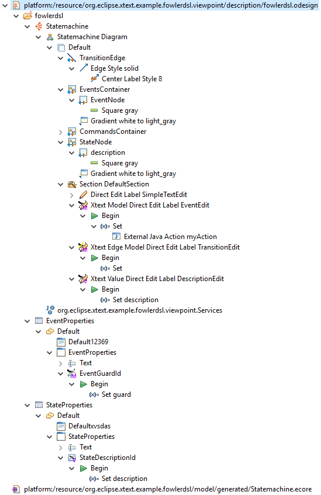
platform:/resource/org.eclipse.xtext.example.fowlerdsl.viewpoint/description/fowlerdsl.odesign
+ fowlerdsl
+ Statemachine
+ Statemachine Diagram
+ Default
+ TransitionEdge (2)
domainClass=statemachine.Transition
labelDirectEdit=TransitionEdit
+ Edge Style solid
+ Center Label Style 8
labelExpression="ocl:self.event.name.concat( ' as Label')"
+ EventsContainer
+ EventNode (1)
domainClass=statemachine.Event
labelDirectEdit=EventEdit
+ Square gray
labelExpression="ocl:self.name.concat(if(self.guard.oclIsUndefined()) then '' else ' [' + self.guard.toString() + ']' endif)"
+ CommandsContainer
+ StateNode
+ description (3)
domainClass=statemachine.State
labelDirectEdit=DescriptionEdit
+ square gray
labelExpression="ocl:'Desc: '.concat(self.description)"
+ Section DefaultSection
+ Direct Edit Label SimpleTextEdit
+ Xtext Model Direct Edit Label EventEdit (1)
id=EventEdit
mapping=EventNode
inputLabelExpression="var:self"
injectorId="org.eclipse.xtext.example.fowlerdsl.viewpoint.fowlerdslInjectorId"
lines=singleLine
+ Begin
+ Set
featureName=«empty»
+ valueExpression="var:newValue"
External Java Action
name="MyAction"
id="exampleAction"
+ ignoredNestedFeatures=guard.min
+ selectedFeatures=Event.name
+ Xtext Edge Model Direct Edit Label TransitionEdit (2)
id=TransitionEdit
mapping=TransitionEdge
inputLabelExpression="var:self"
injectorId="org.eclipse.xtext.example.fowlerdsl.viewpoint.inlineEditInjectorId"
edgeLabelMappings=Center Label Style 8
lines=singleLine
editableFeatures=Transition.event, Transition.guard
prefixTerminalsExpression="aql:'['"
suffixTerminalsExpression="zxcvzxcv"
+ Begin
+ Set
featureName=«empty»
valueExpression="var:newValue"
+ Xtext Value Direct Edit Label DescriptionEdit (3)
id=DescriptionEdit
mapping=description
inputLabelExpression="feature:description"
injectorId="org.eclipse.xtext.example.fowlerdsl.viewpoint.htmlInjectorId"
lines=multiLine
prefixTextExpression="<html><head><title>t</title></head><body>"
suffixTextExpression="</body></html>"
+ Begin
+ Set description
featureName=description
valueExpression="var:newValue"
+ org.eclipse.xtext.example.fowlerdsl.viewpoint.Services
+ EventProperties
+ Default
+ Default12369
+ EventProperties
domainClass=statemachine.Event
+ Name
+ Guard (4)
id=EventGuardId
labelExpression="Guard"
valueExpression="feature:guard"
injectorId="org.eclipse.xtext.example.fowlerdsl.viewpoint.fowlerdslInjectorId"
+ Begin
+ Set guard
featureName=guard
valueExpression="var:newValue"
+ StateProperties
+ Default
+ Defaultxvsdas
+ StateProperties
domainClass=statemachine.State
+ Name
+ Description (5)
id=StateDescriptionId
labelExpression="Description"
valueExpression="feature:description"
lineCount=5
injectorId="org.eclipse.xtext.example.fowlerdsl.viewpoint.htmlInjectorId"
prefixTextExpression="<html><head><title>t</title></head><body>"
suffixTextExpression="</body></html>"
+ Begin
+ Set description
featureName=description
valueExpression="var:newValue"
platform:/resource/org.eclipse.xtext.example.fowlerdsl/model/generated/Statemachine.ecore-
Single-line direct editor of all features of Event instance of Sirius element
EventNodewith the injector supplied byFowlerdslLanguageInjector. Changes to the nested feature Event.guard.min will be ignored. The feature Event.name is pre-selected when showing the Xtext editor. The External Java ActionexampleActionis called after the semantic element has been edited. Persisted to itself because EventEdit.Set.featureName is empty.Event Label (note it does not show the code) Event Editor
Event Editor
-
Single-line direct editor of features
{Transition.event, Transition.guard}of Transition instance of theCenter Label Style 8label of Sirius elementTransitionEdgewith the injector supplied byInlineEditLanguageInjector. Persisted to itself because TransitionEdit.Set.featureName is empty.Transition Label (note it does have additional text at the end) Transition Editor (note the target of the transition cannot be edited)
Transition Editor (note the target of the transition cannot be edited)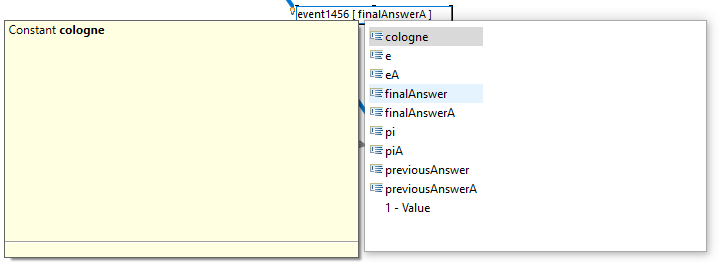
-
Multi-line direct editor of description feature of State instance of Sirius element
descriptionwith the injector supplied byHtmlLanguageInjector. The attribute value will be prefixed by an HTML header and suffixed by an HTML footer. Persisted to State.description because of DescriptionEdit.Set.featureName=description.Description Label (note it does have additional text at the front) Description Editor
Description Editor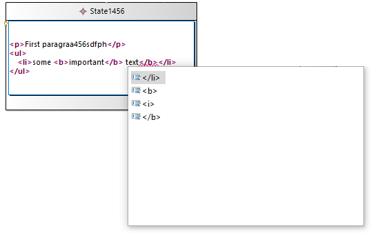
-
Single-line property editor of guard feature of Event instance of Sirius element
EventGuardIdwith the injector supplied byFowlerdslLanguageInjector. Persisted to Event.guard because of EventGuardId.Set.featureName=guard.Event Guard Property Editor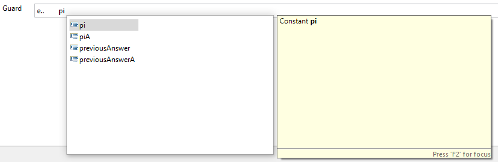
-
Multi-line property editor of description feature of State instance of Sirius element
StateDescriptionIdwith the injector supplied byHtmlLanguageInjector. The attribute value will be prefixed by an HTML header and suffixed by an HTML footer. Persisted to State.description because of StateDescriptionId.Set.featureName=description.State Description Property Editor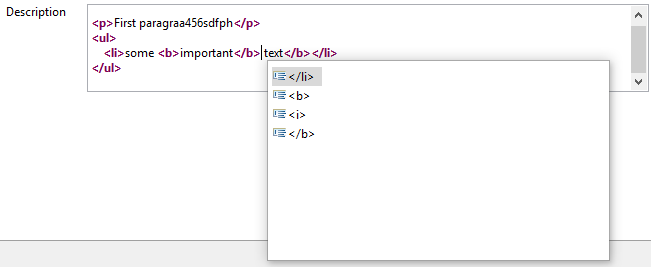
3.2. plugin.xml Contents
<extension point="com.altran.general.integration.xtextsirius.runtime.xtextLanguageInjector">
<injector
id="org.eclipse.xtext.example.fowlerdsl.viewpoint.fowlerdslInjectorId"
class="org.eclipse.xtext.example.fowlerdsl.viewpoint.xtextsirius.FowlerdslLanguageInjector"
/>
<injector
id="org.eclipse.xtext.example.fowlerdsl.viewpoint.inlineEditInjectorId"
class="org.eclipse.xtext.example.fowlerdsl.viewpoint.xtextsirius.InlineEditLanguageInjector"
/>
<injector
id="org.eclipse.xtext.example.fowlerdsl.viewpoint.htmlInjectorId"
class="org.eclipse.xtext.example.fowlerdsl.viewpoint.xtextsirius.HtmlLanguageInjector"
/>
</extension>3.3. Properties Views
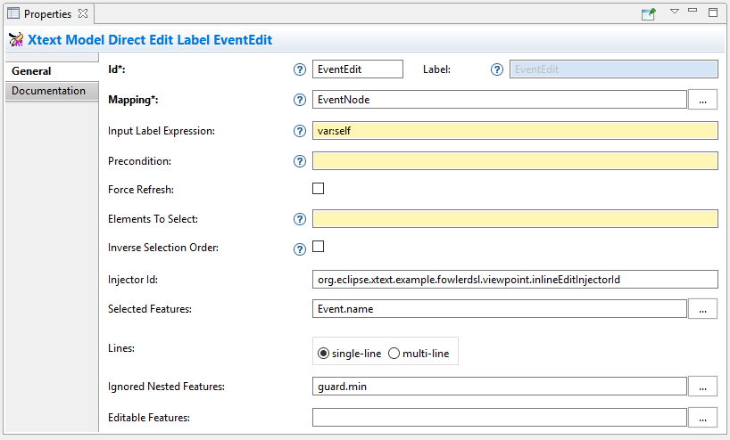
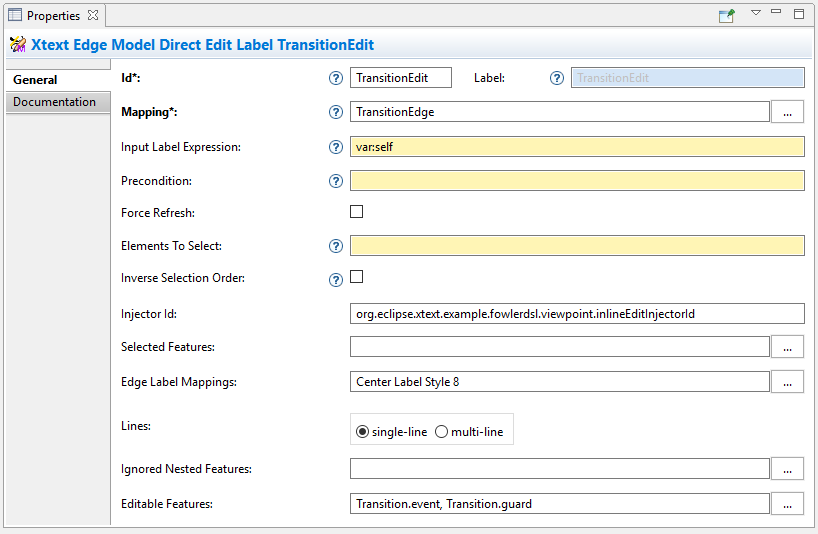
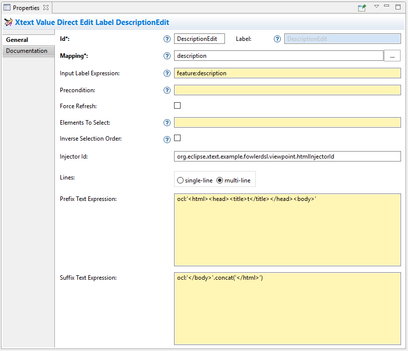
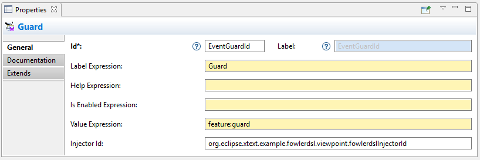
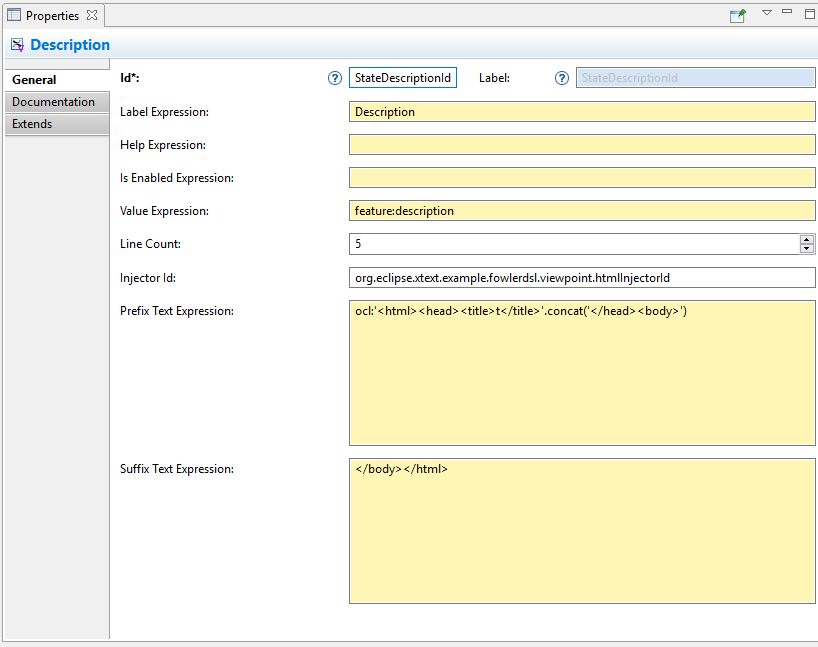
4. Reference
4.1. Editor Placement
4.1.1. Diagram / Direct Editor
A direct editor is activated by
-
double-clicking on the diagram element,
-
pressing F2 while the diagram element is focused,
-
or starting to type while the diagram element is focused.
The editor replaces the label and is sized to fit its contents.
For single-line editors, the editor closes on pressing Enter.
Editor contents are committed to the model when the editor is closed. The editor closes when it loses focus, e.g. by a click outside the editor.
Direct editors are specified as tool in the odesign editor.

We provide the following variants:
-
 Edge Label Direct Editor for Model content
Edge Label Direct Editor for Model content -
Edge Label Direct Editor for Value content
-
Direct Editor for Model content
-
Direct Editor for Value content
They can be added to the tools section the same as a regular Direct Edit Label tool. Accordingly, they need to be selected as Label Direct Edit on the Behavior page of the edited Sirius element.

The label is independent of the edited text, i.e. the label can show a different text than the direct editor.
If the set value operation feature is empty, it is interpreted as to replace var:self.
Direct editors
-
may display as single-line or multi-line editor,
-
and require an injector.
If the editor contains model contents, it supports to limit the editable features, to ignore some nested features, and to define pre-selected features. If the Sirius element is an edge, the editor requires to select an edgeLabelPosition.
4.1.2. Property View / Property Editor
The Eclipse Properties View contains the property editors.
Editor contents are committed when the editor is hidden. This happens when the end-user selects a different property page or a different diagram element.
Property editors are specified as property widgets in the odesign editor.

We provide the following variants:
-
 Text (aka single-line) Widget for Model content
Text (aka single-line) Widget for Model content -
Text Area (aka multi-line) Widget for Model content
-
Text (aka single-line) Widget for Value content
-
Text Area (aka multi-line) Widget for Value content
They can be added as a widget to a Properties Sirius element the same as regular widgets.
Property editors
-
may display as single-line or multi-line editor,
-
and require an injector.
If the editor contains model contents, it supports to limit the editable features, to ignore some nested features, and to define pre-selected features.
4.2. Editor Contents
4.2.1. Editing Models
The editor can contain semantic elements from the same model the edited diagram is based on.
A typical use-case may allow the end-user to edit several features of a semantic element in-line with complete Xtext support.
As an example, think of a UML class attribute displayed as + age: int = 0.
If the end-user opens the direct editor of the attribute, they can change all these features (visibility, name, type, default value) with complete Xtext support, e.g.
-
Proposing all possible visibilities
-
Validating the name (e.g. do not allow spaces)
-
Proposing and checking the available types
-
Allow no, a literal, or a referenced default value
The editor assumes the model of the edited diagram is persisted with the same Xtext grammar as supplied to the editor (except for explicit differences).
Any changes in the editor are applied to the underlying model of the edited diagram (except non-editable features and ignored nested features). The changes are committed to the Sirius edit session, but only persisted if and when the edited diagram is saved.
The editor maintains references between the edited semantic element (and its descendants) and the rest of the model in both directions, if possible. The editor does not prevent the end-user from breaking references, e.g. by changed referenced names or deleting referenced elements.
In order to provide appropriate auto-completion and other Xtext features, the editor maintains a complete copy of the edited diagram’s model (and optionally all other Ecore resources of the Sirius session). However, only the subsection relevant to the selected semantic element (and limited by the editable features, if applicable) is shown to, and editable by, the end-user.
Determining the correct subsection is quite complicated, especially if the subsection borders in grammar terminals or contains unset features. This may lead to incorrectly selected subsections. However, the result should only be affected by the grammar, therefore the developer can test this during development.
The editor reintegrates its contents into the edited diagram’s model on model level, not on text level. This means if the end-user modified any part of the model not contained within the edited semantic element, these changes are not committed. The editor also omits changes to non-editable features or ignored nested features from the commit.
4.2.2. Editing Values
The editor can interpret simple String feature of semantic elements as Xtext models.
A typical use-case may allow the end-user to edit the description feature of a semantic element as markup text with complete Xtext support.
As an example, think of an entity model containing classes that may have descriptions. By its metamodel, the description is merely a String. An Xtext value editor (primed with an Xtext implementation of HTML) for the description allows the end-user to describe the class with complete Xtext support for HTML.
Any changes in the editor are stored in the semantic element’s String feature as-is. The changes are committed to the Sirius edit session, but only persisted if and when the edited diagram is saved.
4.3. Editor Infos [1]
4.3.1. Injector
An injector describes a complete Xtext configuration for a language.
In order to avoid class loading issues, we provide injectors via Eclipse extension point com.altran.general.integration.xtextsirius.runtime.xtextLanguageInjector.
<extension point="com.altran.general.integration.xtextsirius.runtime.xtextLanguageInjector">
<!-- [0..*] injectors -->
<injector
id="«unique id of this injector to be referenced from odesign model»"
class="«fully qualified name of instance of com.altran.general.integration.xtextsirius.runtime.xtextLanguageInjector»"
/>
</extension>For each injector, we need to define an id (to be referenced from the odesign model) and a class that implements com.altran.general.integration.xtextsirius.runtime.IXtextLanguageInjector.
package com.altran.general.integration.xtextsirius.runtime;
import com.google.inject.Injector;
public interface IXtextLanguageInjector {
public static final String EXTENSION_POINT_ID = "com.altran.general.integration.xtextsirius.runtime.xtextLanguageInjector";
public Injector getInjector();
/**
* Whether we should use a specialized injector that avoids mandatory
* horizontal and vertical scrollbars.
*
* <p>
* By default, the Xtext embedded editor always shows horizontal and
* vertical scrollbars; they are disabled (greyed out) if not required. We
* can hide unnecessary scrollbars, but this requires a specialized injector
* that binds its own implementation for
* <tt>{@link com.google.inject.Provider Provider}<{@link org.eclipse.xtext.ui.editor.embedded.EmbeddedEditorFactory.Builder EmbeddedEditorFactory.Builder}></tt>.
* This fails if the injector already has a binding for this type.
* </p>
*
* @return {@code true} if we should use a specialized constructor,
* {@code false} otherwise.
*/
default boolean useSpecializedInjectorForProperties() {
return true;
}
}A typical implementation is provided below.
import org.eclipse.xtext.example.fowlerdsl.ui.internal.StatemachineActivator;
import com.altran.general.integration.xtextsirius.runtime.IXtextLanguageInjector;
import com.google.inject.Injector;
public class FowlerdslLanguageInjector implements IXtextLanguageInjector {
@Override
public Injector getInjector() {
// note we're using the activator from the UI plugin generated by Xtext.
return StatemachineActivator.getInstance()
.getInjector(StatemachineActivator.ORG_ECLIPSE_XTEXT_EXAMPLE_FOWLERDSL_STATEMACHINE);
}
}We refer to the id via the InjectorId property.
4.3.2. Single-line vs. Multi-line
The editor can display one single line or several lines.
Effects for single-line editors:
-
All newline characters from the original content are replaced by the same amount of spaces.
-
It is not possible to enter a newline.
-
Enter closes the direct editor.
For direct editors, we define this info via the Lines property.
It will adjust its size automatically.
For property editors, we define this info by selecting the appropriate widget.
For Text Area widgets, we can define the number of lines to be shown via the Line Count property.
4.3.3. PrefixText and SuffixText
In order to provide appropriate auto-completion and other Xtext features, a value editor requires a complete model. However, the String feature may contain only a subsection of a complete model. Therefore, the developer may provide text that should be pre-pended and appended to the String feature’s value in order to complete the model. The end-user still sees and edits only the String feature’s value.
Think of a simplified version of HTML implemented as Xtext language. A complete model might look like this:
<html>
<head>
<title>This is a test</title>
</head>
<body>
<p>Some paragraph</p>
<ul>
<li>This is <b>important</b></li>
<li>And something's <i>useful</i></li>
</ul>
<p>Some other not so <i>very interesting,</i> but yet <b>highlighted</b> paragraph</p>
</body>
</html>This language should be used for the description feature of classes in an entity model.
However, the model may contain several such classes, and the description of all of them should end up in only one HTML file (in a later generation step). Instead of storing a complete model into every class' description (and bothering the end-user with it), the description contains only the following part:
<p>Some paragraph</p>
<ul>
<li>This is <b>important</b></li>
<li>And something's <i>useful</i></li>
</ul>
<p>Some other not so <i>very interesting,</i> but yet <b>highlighted</b> paragraph</p>In order to complete the model for Xtext, the developer supplies the editor with
- prefixTextExpression
-
<html><head><title>Title</title><head><body> - suffixTextExpression
-
ocl:'</body>'.concat('</html>')
(the expression does not make sense really, it’s only to show we actually can use expressions.)
This way, Xtext works on a complete model, but only the relevant parts are available to the end-user.
We provide these infos via the prefixTextExpression / suffixTextExpression properties.
As hinted by the name, these fields accept both a simple string as well as any expression supported by Sirius.
4.3.4. Editable Features
The editor can limit which features of a semantic element are editable by the end-user.
A typical use-case hides the feature defining the source and/or target of an edge from being edited textually.
Assume the following Xtext grammar snippet defining an UML-like Association, to be displayed as edge:
Association:
name=ID
code=INT?
('[' guard=Guard ']')?
source=[Class] '-->' target=[Class]
;Example model:
driver 23 Car --> Person
The label would show driver 23.
The end-user should not be able to change the source and/or target of the association, but use an Xtext editor for the label to edit the other features.
Therefore, the developer supplies the following list of editableFeatures:
-
Association.name -
Association.code -
Association.guard
Limiting the editable features works by finding the first and last of the features in the text stream, and limit the editable area of the model to this subpart.
Therefore, if the model looks like
driver 23 [someCondition] Car --> Person
and the editableFeatures are limited to
-
Association.name -
Association.guard
the editor would still include the code subpart, because it’s in between the name and guard subpart.
driver 23 [someCondition]
If the list of editableFeatures is empty, all features are considered to be editable.
If the list of editableFeatures is not empty, we omit all features not contained in the list from committing back to the original model.
The Editable Features property contains a read-only list of features.
Edit it by activating the … button.
This opens a pop-up window listing all available and currently selected features.
4.3.5. Ignored Nested Features
The editor can omit some nested features from committing back to the original model.
Typically, this is combined with a specialized edit grammar to also hide the ignored nested features from the end-user. It might also be necessary to declare these features transient.
Assume the following Xtext grammar snippet defining an UML-like Association, to be displayed as edge:
Association:
name=ID
target=TypeRef
;
// also used at lots of other places
TypeRef:
lowerBound=INT '..' upperBound=INT type=[Type]?
;Example model:
wheels 1..4 RubberWheel
The end-user should not be able to change the target type of the Association, but use an Xtext editor for the label to edit the other features.
Therefore, the developer supplies the following (single-entry) list of ignoredNestedFeatures:
-
target.type
Thus, the editor ignores all end-user changes to target.type.
The end-user would probably be very annoyed about changing something in the editor, and being ignored.
We can remove this annoyance by using a specialized grammar to remove the type part:
Association:
name=ID
target=AssociationTypeRef
;
AssociationTypeRef returns TypeRef:
lowerBound=INT '..' upperBound=INT
;
// also used at lots of other places
TypeRef:
lowerBound=INT '..' upperBound=INT type=[Type]?
;Only changing the grammar would not be sufficient, as this would delete typeRef.type on every edit.
The Ignored Nested Features property contains a read-only list of strings.
Edit it by activating the … button.
This opens a pop-up window listing all current entries on the right, and a text box on the left to add new ones.
Unfortunately, we cannot provide a list of all possible entries, as they depend on the structure of the actually edited model at run-time.
Each entry is a dot-separated concatenation of EStructuralFeature names. the first segment is a feature of the edited semantic element.
4.3.6. Pre-selected Features
The editor can set the initial text selection to defined features.
A typical use-case pre-selects the name of the edited semantic element.
Assume the following Xtext grammar snippet defining a statemachine event:
Event:
'event' name=ID code=INT
;Most of the time, the end-user wants to change the name of the event.
Therefore, the developer supplies the following (single-entry) list of selectedFeatures:
-
Event.name
Thus, when the end-user presses F2 on the Event shape, the editor selects the bold text in this example:
event MyEventName 23
Pre-selecting features works by finding the first and last of the features in the text stream, and set the initial text selection to this subpart. Thus, if the developer selected two features, but a third one is in between them, all of the three features will be selected.
The Selectable Features property contains a read-only list of features.
Edit it by activating the … button.
This opens a pop-up window listing all available and currently selected features.
4.3.7. Position of Affected Edge Label
Unfortunately, we cannot assign different Direct Edit Label tools to different edge labels (begin, center, end).
Therefore, if the developer attaches a direct editor to an edge, the developer needs to specify which edge label should be equipped with Xtext powers.
This info is contained in the Edge Label Mappings property.
The read-only list is edited by activating the … button.
This opens a pop-up window listing all available and currently selected edge labels.
4.3.8. PrefixTerminals and SuffixTerminals
By default, the editor uses some heuristics to determine which terminals should be included at the beginning and end of the edited text.
This behavior can be overridden by the developer.
For all value editors, the developer may define a prefixTerminalsExpression and/or a suffixTerminalsExpression in the odesign file.
For both of them, the following rules apply:
-
If the field is empty (aka. not set, aka. null), the heuristics will be used.
-
If the field contains an interpreter expression (e.g. starting with
aql:), the resulting string of the interpreter call is used for terminals matching. -
If the field contains anything else, the entered string is used for terminals matching.
Thus, if we want to disable the heuristics and don’t include any preceding terminals, our prefixTerminalsExpression looks like:
aql:''| The editor does not modify the resulting string in any way! Therefore, the editor also tries to match whitespace characters to terminals (as there might be grammars with semantic whitespace). |
Assume the following grammar as example. It uses the usual C-like whitespace and comment rules:
Event:
'event' name=ID '[' code=INT ']' ('guarded' 'by' guard=[Guard])?
;Example model contents:
event ford [23] event arthur [42] guarded by Trillian event zaphod [4223] /* caution, very random! */ guarded by HeartOfGold
For editing Event, assume:
- editableFeatures
-
-
code
-
name
-
- prefixTerminalsExpression
-
event
Thus, we always want to include the
eventterminal. - suffixTerminalsExpression
-
aql:']'.concat(if(self.guard <> null) 'guarded' else ''))Thus, we always want to include the
]terminal. If the edited Event had a guard, we do not want to edit it. However, we want to show the end-user that a guard is present, thus include theguardedterminal. Note that there are no spaces in the resulting string.
The resulting editor contents for all three Events will look like:
event ford [23]
event arthur [42] guarded
event zaphod [4223] /* caution, very random! */ guarded
We discuss the terminals matching process for suffixTerminalsExpression below.
It works accordingly for prefixTerminalsExpression.
We ignore all whitespace and comment contents, as defined by the editor grammar.
Terminals matching starts at the last editable feature in the text.
From there, we look at all following tokens, and include them as long as their combined text matches the resulting string of suffixTerminalsExpression.
As soon as we find a non-terminal token, we quit terminals matching.
The example would work the same way if the suffixTerminalsExpression was:
]guarded
Explanation: For event ford, it would successfully match ] but quit terminals matching afterwards, because the next token would not be a terminal (in this case, it would be the following Event rule).
| Sometimes, Xtext considers terminals to be part of a feature. In this case the terminal is always contained in the edited text. Adjusting the grammar might help: Wrap the feature in additional parentheses in order to give some hints to Xtext. |
4.4. Additional Model Operations
As with regular Sirius operations, we can execute other operations after the Xtext/Sirius editor set value operation. (Executing other operations before the set value operation is not supported.)
This can be useful to post-process the changed model, e.g. to adjust explicit imports to the changes inside the editor.
4.5. Handling Syntax Errors
If the end-user closed an editor with unparseable content (i.e. containing syntax errors), no changes will be committed and the following error dialog is displayed:
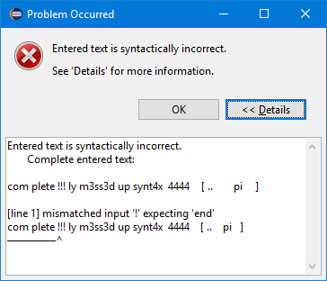
The dialog shows the complete entered text, to give the end-user a chance to keep his entry by copying the text. It also shows all error messages of the parser with hints to the invalid position.
5. Advanced Capabilities
5.1. Using a Different Grammar for Editing Model Contents
For editing model contents, we might use a grammar that differs from the one used for model serialization.
A typical use-case may allow to change the order of features in order to allow only a subset of them to be modified.
As an example, assume the following Xtext grammar snippet:
grammar org.eclipse.xtext.example.fowlerdsl.Statemachine with org.eclipse.xtext.common.Terminals
generate statemachine "http://www.eclipse.org/xtext/example/fowlerdsl/Statemachine"
Statemachine :
{Statemachine}
('events'
events+=Event+
'end')?
// ...
;
Event:
name=ID code=INT? ('[' guard=Guard ']')?
;
// ...In our editor, we want the end-user to edit only the name and guard features of Event. This is not possible with the given grammar, as code is placed between them.
To solve this, we create a new language:
grammar org.eclipse.xtext.example.fowlerdsl.InlineEdit with org.eclipse.xtext.example.fowlerdsl.Statemachine
import "http://www.eclipse.org/xtext/example/fowlerdsl/Statemachine"
import "http://www.eclipse.org/emf/2002/Ecore" as ecore
InlineStatemachine returns Statemachine: (1)
Statemachine
;
//@Override (2)
Event:
name=ID ('[' guard=Guard ']')? code=INT?
;| 1 | We have to have a root rule, because Xtext uses the first rule as entry rule. We just forward to the original root rule. |
| 2 | Newer Xtext version know the @Override annotation to redefine a rule. |
This creates a grammar (for the identical metamodel) that serializes features name and guard adjacent to each other, so we can limit the editor to them.
The editing grammar must fulfill the following criteria:
-
based on identical metamodel
-
has same root element
-
contains rules for all semantic elements also covered by the original grammar (either inherited or self-implemented)
-
must serialize correctly from a model without any previous textual representation
We might need to fix serialization issues in this approach.
5.2. Force Serialization of Whitespaces
If we experience serialization issues, namely keywords get merged resulting in invalid syntax, we can use a workaround provided by com.altran.general.integration.xtextsirius.runtime plug-in.
Typical symptoms of this issue include invalid auto-completion suggestions in the editor and exceptions on committing the changed elements.
To fix this, register the following classes to the editing language:
public class InlineEditRuntimeModule extends org.eclipse.xtext.example.fowlerdsl.AbstractInlineEditRuntimeModule {
public Class<? extends IHiddenTokenSequencer> bindIHiddenTokenSequencer() {
return com.altran.general.integration.xtextsirius.serializer.ForceWhitespaceBetweenKeywordsHiddenTokenSequencer.class;
}
public Class<? extends TextRegionAccessBuilder> bindTextRegionAccessBuilder() {
return com.altran.general.integration.xtextsirius.serializer.ForceWhitespaceBetweenKeywordsTextRegionAccessBuilder.class;
}
}5.3. Force Ignored Nested Features to be Transient
Especially if we ignored nested features, we might need to adjust the serializer to be able to provide a suitable adjusted grammar.
Assume the following Xtext grammar snippet defining an UML-like Association, to be displayed as edge:
Association:
name=ID
target=TypeRef
;
// also used at lots of other places
TypeRef:
lowerBound=INT '..' upperBound=INT type=[Type]
;Note that TypeRef.type is mandatory.
Example model:
wheels 1..4 RubberWheel
We want to ignore target.type for Association (as described) and use the following adjusted grammar:
Association:
name=ID
target=AssociationTypeRef
;
AssociationTypeRef returns TypeRef:
lowerBound=INT '..' upperBound=INT
;
// also used at lots of other places
TypeRef:
lowerBound=INT '..' upperBound=INT type=[Type]
;This won’t work, because the Xtext serializer refuses to serialize a model if it cannot find a grammar rule for a mandatory feature.
We solve this by registering a special org.eclipse.xtext.serializer.sequencer.TransientValueService to our adjusted grammar:
public class InlineEditRuntimeModule extends org.eclipse.xtext.example.fowlerdsl.AbstractInlineEditRuntimeModule {
public Class<? extends ITransientValueService> bindSerializerTransientValueService() {
return com.altran.general.integration.xtextsirius.runtime.ignoredfeature.IgnoredFeatureTransientValueService.class;
}
}5.4. Constrain the Global Scope to all Ecore Resources from the Sirius Session
Sirius has its own session management, including the contained Ecore resources. We might want to limit the Xtext editor’s global scope to these resources.
A special org.eclipse.xtext.scoping.IGlobalScopeProvider achieves this:
public class InlineEditRuntimeModule extends org.eclipse.xtext.example.fowlerdsl.AbstractInlineEditRuntimeModule {
public Class<? extends IGlobalScopeProvider> bindIGlobalScopeProvider() {
return com.altran.general.integration.xtextsirius.runtime.resource.XtextSiriusResourceSetGlobalScopeProvider.class;
}
}| This copies the contents of all Ecore resources from a Sirius session when showing an Xtext/Sirius editor. Depending on the number and size of the resources, the processing and memory performance might be significant. |
6. Versions
This version 0.22.1-SNAPSHOT of the asset was developed using the following components and versions.
| Component | Version | Repository URL |
|---|---|---|
Eclipse |
4.7.3a (Oxygen 3a) |
|
Google Guava |
21.0 |
http://download.eclipse.org/tools/orbit/downloads/drops/R20170919201930/repository |
Apache Commons |
2.6 |
http://download.eclipse.org/tools/orbit/downloads/drops/R20170919201930/repository |
Eclipse Xcore |
1.5.0 |
|
Eclipse Xtext |
2.12.0 |
|
Eclipse Sirius |
5.1.1 |
http://download.eclipse.org/sirius/updates/releases/5.1.1/oxygen |
Yakindu Statecharts Xtext Support |
3.1.1 |
7. Known Issues
-
#13
com.google.inject.CreationExceptionwith messageA just-in-time binding to org.eclipse.xtext.ui.editor.embedded.EmbeddedEditorFactory$Builder was already configured on a parent injector. at com.altran.general.integration.xtextsirius.runtime.eef.ui.XtextEditorSwtStyleOverridingModule.configure(XtextEditorSwtStyleOverridingModule.java:34)
We have to specialize the language injector in order to get rid of the scrollbars in Xtext editors. This works only if the language itself did not customize the injector in this part. Xbase is the prime example of languages including such a customization. If you can accept always-visible scrollbars as a compromise, override
com.altran.general.integration.xtextsirius.runtime.IXtextLanguageInjector.useSpecializedInjectorForProperties()in your language injector and returnfalse.
This could be fixed in a future version of Xtext/Sirius Integration, if we based on Xtext 2.13. -
#12 Determining the correct subsection for model content is not always possible. This leads to undesired content in the edit field for model content. PrefixTerminals and SuffixTerminals can help to some extent. We cannot avoid this completely as the subsection is determined by heuristics, which may fail by definition. We’d like to provide a hook so users can adjust this on their own, but this would expose the Xtext node API to the user, which is quite complex to use and not the right level of abstraction.
-
#14 DirectEdit using the F2 key only works once at a time. After the editor closes, the focus is lost, and we have to re-select the shape with the mouse prior to pressing F2 again.
-
#15 Sometimes dragging a shape with Xtext/Sirius direct editor leads to translucent rectangles.
-
#16 The editor width is determined by the width of the edited shape’s label. Currently, there is no way to influence the editor width directly. As a workaround, we may append several spaces at the end of the label.